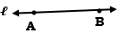
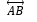
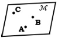
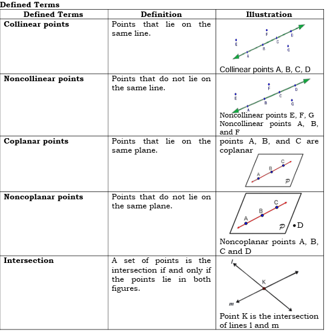
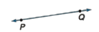
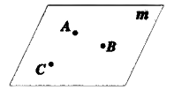
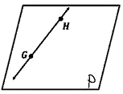
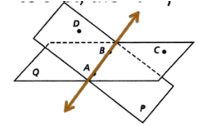
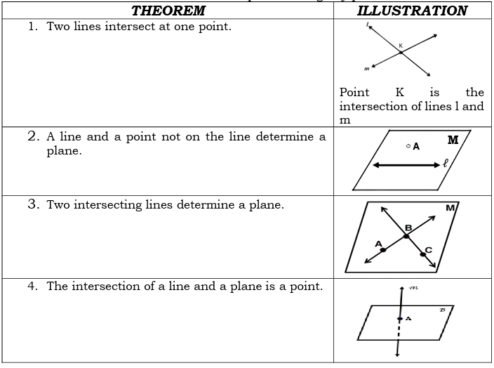

Grade 8 Geometry
TOPIC: THE MATHEMATICAL SYSTEM OF GEOMETRY
LESSON 2: DEFINED TERMS, UNDEFINED TERMS, POSTULATRS AND THEOREMS
Lesson Objectives:
At the end of the lesson, the students should be able to:
illustrates defined terms, undefined terms, postulates and theorems; and
identify the postulates or theorems being referred in the given statement.
What’s In
Recall: Point, Line, and Plane
Directions: Determine whether each of the following suggests a point, a line or a plane.
- straight wire
- pinhole
- sheet of paper
- period
- stick
What’s New Directions: Write something about the following terms using your previous learning in geometry.
- Point
- Line
- Plane
What is It
Points, lines, and planes are the building blocks of geometry. They are the undefined terms in geometry because they can be described without using other figures.
undefined term illustration how to name other information point Dot
read as: point P
• Has no length, width, or space; occupies space. no • Examples: dot, dust particle, period line Straight mark with two arrow heads

 or Line AB or line ℓ • Has infinite length but no width thickness. • Examples: straight stick and wire, plane Slanted four-sided figure

Plane M or plane ABC • Extends infinitely in two dimensions. No thickness. • Examples: Sheet of paper, wall The undefined terms are used to define other geometric concepts. Here are some of the defined terms formed from the undefined terms.

Postulates and Theorems
Postulates also known as axioms are statements accepted as true without proof.
| POSTULATE | ILLUSTRATIONS |
|---|---|
| 1.A line and a plane contain an infinite number of points. | |
| 2. Line Postulate Two points determine exactly one line. |  |
| 3. Plane Postulate Three noncollinear points determine a plane. |  |
| 4. If two points are on a plane, then the line containing them is at the same plane. |  |
| 5. If two planes intersect, then their intersection is a line. |  |
Theorems are statements that need to be proven using any postulate or theorem.
